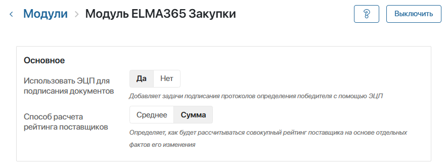
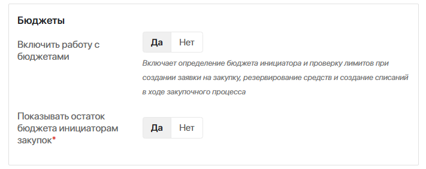
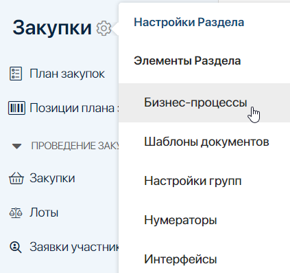
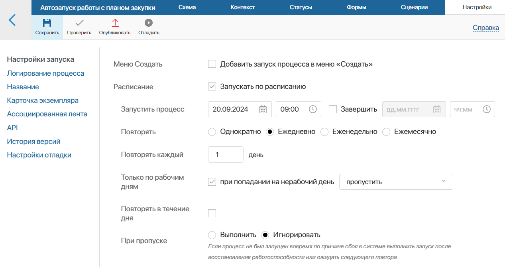
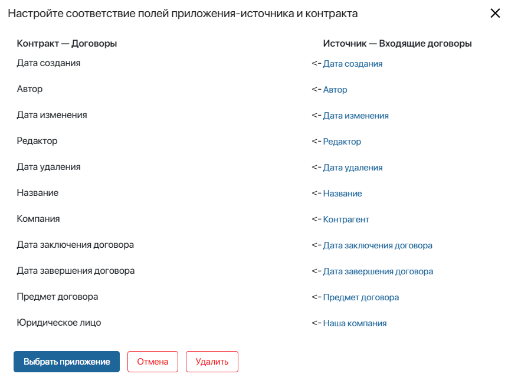

ELMA365 Закупки включает в себя три бизнес-решения:
- Закупки — основное решение, которое предоставляет инструменты и бизнес-процессы для автоматизации закупочных процедур, работы с бюджетами и взаимодействия с поставщиками;
- Портал закупок — дополнительное решение, позволяющее сотрудникам, которые не работают в ELMA365, создавать заявки на закупку и отслеживать их статусы через внешний портал;
- Интеграции с ЭТП — дополнительное решение для интеграции с публичной электронной торговой площадкой Сбер А, а также организации собственной ЭТП.
После установки решений администратор системы выполняет их настройку.
Настроить решение «Закупки»
Подготовьте бизнес-решение к работе.
Добавить пользователей в группы
Включите сотрудников в группы решения, чтобы предоставить им доступ к функциям и определить их роли в бизнес-процессах. Для этого перейдите в раздел, в котором находится группа, нажмите значок шестерёнки рядом с его названием и выберите пункт Настройки групп.
Бизнес-решение включает группы:
- в разделе Потребности:
- Бухгалтер — добавьте в группу сотрудников, которые будут выдавать средства и проверять отчётную документацию в ходе процесса Приобретение по счету;
- Согласующие приобретение по счету — включите в группу пользователей, которые будут согласовывать потребности в процедуре малой закупки в рамках процесса Приобретение по счету.
- в разделе Закупки:
- Отдел закупок и Тендерный отдел — включите в группы сотрудников, которые будут иметь доступ к приложениям внутри раздела Закупки;
- Согласующие план закупок — укажите пользователей, которые утверждают план закупок в ходе бизнес‑процесса Согласование плана закупок.
- в разделе SRM:
- Ответственные за оплату заказов — укажите сотрудников, которые будут проводить оплату в рамках бизнес-процессов Обработка заказа и Обработка поставки;
- Ответственные за проверку документов по поставкам — выберите сотрудников, которые проверяют документацию по поставке перед оплатой в ходе бизнес-процесса Обработка поставки;
- Ответственные за проверку поставщиков — включите в группу сотрудников, которые будут оценивать риски и подтверждать возможность сотрудничества с контрагентами в рамках бизнес-процесса Проверка поставщика.
Настроить «Модуль ELMA365 Закупки»
- Перейдите в раздел Администрирование > Модули и выберите Модуль ELMA365 Закупки.
- Задайте основные настройки решения Закупки:

- Использовать ЭЦП для подписания документов — включите настройку, чтобы после подведения итогов конкурентной закупки протокол победителя подписывался электронной подписью. Если опция отключена, шаг подписания будет пропускаться;
- Способ расчета рейтинга поставщиков — в ходе работы с поставщиками им присваивается рейтинг. Он формируется на основе оценок, выставленных в ходе бизнес-процессов с помощью специальных блоков, или вручную в приложении Изменение рейтинга поставщика. Рейтинг поставщиков позволяет выбирать лучшего исполнителя при формировании заказов. Выберите, как он рассчитывается:
- Среднее — работа поставщика при каждом взаимодействии с ним оценивается по стобалльной шкале, и на основе всех оценок выставляется средний балл. Например, рейтинг поставщика был равен 100, из-за задержки доставки ему выставили оценку 60, итоговое значение — 80;
- Сумма — при каждом взаимодействии с поставщиком определённое значение прибавляется к текущему рейтингу или вычитается из него. Например, изначально рейтинг поставщика равен 100. Благодаря своевременной доставке рейтинг повышают на +5, затем из‑за ненадлежащего качества товара ему выставляют оценку ‑25, результат — 80.
Обратите внимание, на следующем этапе настройки решения в зависимости от выбранного способа расчёта рейтинга нужно по‑разному заполнить справочник Факторы изменения рейтинга. При расчёте по среднему указывается значение по стобалльной шкале, при расчёте по сумме — значение, которое будет добавляться или вычитаться.
- Настройте работу с бюджетами:

- Включить работу с бюджетами — опция управляет использованием раздела Бюджетирование. С помощью него можно устанавливать лимиты на затраты по направлениям закупок, резервировать средства в бюджетах, фиксировать списания;
- Показывать остаток бюджета инициаторам закупок* — включите настройку, чтобы при создании заявки на закупку пользователь видел доступные средства в выбранном бюджете. Они равны балансу бюджета за вычетом средств, зарезервированных на закупку.
- Настройте автоматическое заполнение данных и проверку поставщиков:

- Автоматическое заполнение ОКПД2 и ОКЕИ — включите опцию, чтобы при заполнении справочников Номенклатура и Единицы измерения коды из классификаторов автоматически подставлялись из внешних сервисов.
Данные о единицах измерения передаются с Единого портала бюджетной системы Российской Федерации. Коды номенклатур загружаются из сервиса DaData, поэтому для их заполнения нужно ввести ниже API-ключ;
- API-ключ DaData — введите ключ из личного кабинета DaData. Интеграция используется для автоматической вставки кодов из ОКПД2 в справочник Номенклатура;
- API-ключ Контур.Фокус — если вы работаете с сервисом проверки контрагентов Контур.Фокус, введите ключ из личного кабинета. Интеграция применяется для получения расширенных показателей благонадёжности поставщиков. Данные используются при проверках поставщиков и записываются в раздел SRM в приложение Расширенная аналитика Контур.Фокус;
- Рисковая модель Контур.Фокус Комплаенс — если вы используете бизнес-решение Интеграция с Контур.Призма, вы можете применять для автоматической проверки поставщиков настроенную в Контур.Призма рисковую модель. Из неё берутся критерии оценки рисков. В ходе проверки поставщика ответственный сотрудник увидит результаты оценки рисков в Контур.Призма и сможет использовать результат, чтобы принять решение по контрагенту.
Чтобы указать модель для оценки рисков по поставщикам, нажмите значок лупы и перейдите в приложение Рисковые модели. Выберите элемент, который хранит идентификатор нужной модели в сервисе Контур.Призма;
- Критичный уровень риска — в ходе проверки поставщика ответственный сотрудник оценивает риски по факторам, которые добавлены в справочник Факторы риска. Для каждого фактора задан изначальный вес, а сотрудник выставляет свою оценку риска по нему. На основе весов и оценки сотрудника рассчитывается индекс риска. Укажите в поле значение индекса, которое будет считаться критически высоким. Сотрудник увидит в блоке Уровень риска надпись Высокий и сможет отметить, что поставщик не прошёл проверку. По умолчанию критичным считается значение 50.
- Нажмите Сохранить.
Включить запуск бизнес-процессов по расписанию
Автоматический запуск с определённой периодичностью предполагается для следующих процессов бизнес-решения:
- в разделе Потребности:
- Автозапуск напоминания о составлении плана закупок — отправляет ответственным за направления закупок напоминания о нераспределённых потребностях. Сотрудники должны добавить их в планы закупок, приобрести по счёту или включить в заказ.
- в разделе Закупки:
- Автозапуск работы с планом закупки — отправляет все новые планы закупки на рассмотрение согласующим;
- Автозапуск формирования закупок — отправляет пользователям, создавшим планы закупок, напоминания о наступлении срока подготовки к закупочной процедуре.
- в разделе SRM:
- Проверка сроков КП и прайс-листов — находит коммерческие предложения и прайс-листы с истёкшим сроком действия и изменяет их статус на Архив;
- Проверка сроков проверок и аккредитаций — находит проверки и аккредитации поставщиков, у которых истёк срок действия. Они переводятся в статус Срок действия завершён, а в их ассоциированную ленту отправляется оповещение. Оно также отобразится в #ленте сотрудника, который инициировал проверку или аккредитацию, чтобы он мог при необходимости запустить её повторно.
Настройте для каждого процесса запуск по расписанию:
- Чтобы изменение процессов стало доступно, разблокируйте бизнес-решение. Для этого перейдите в раздел Администрирование > Решения, нажмите напротив решения Закупки три точки, выберите Разблокировать и подтвердите действие.
- Перейдите в раздел, где настроен нужный процесс, нажмите шестерёнку рядом с его называнием и выберите пункт Бизнес-процессы.

- Нажмите на название процесса в списке.
- На верхней панели дизайнера бизнес-процессов перейдите на вкладку Настройки и включите опцию Запускать по расписанию. Задайте частоту и время запуска процесса, например, каждый день в 9:00.

Подробнее о настройке запуска по расписанию читайте в статье «События».
- Сохраните и опубликуйте процесс.
Настроить работу с документами по заказам
В рамках бизнес-решения Закупки в разделе SRM оформляются заказы и загружаются связанные с ними документы. Работа с документами по заказам организована с помощью контрактов Договоры, Закрывающие документы и Счета. К ним подключаются источники — приложения, в которых в вашей компании хранятся соответствующие документы. В контракты включаются элементы выбранных приложений.
Использование контрактов позволяет обрабатывать документ одновременно по маршруту, настроенному для приложения‑источника, и в бизнес-процессе решения Закупки. Например, в компании есть приложение Входящие договоры. Для него настроен бизнес-процесс, в ходе которого происходит согласование и подписание договоров. В решении Закупки эти же договоры нужно использовать в процессе обработки заказа поставщику. Для этого приложение Входящие договоры выбирается в качестве источника для контракта Договоры.
Для правильной работы бизнес-решения в настройках каждого контракта решения Закупки нужно добавить приложения‑источники. Если вы используете бизнес-решение Управление договорами, рекомендуем указать в качестве источников входящие в него приложения:
- контракт Договоры — приложение Входящие договоры;
- контракт Закрывающие документы — приложения Товарные накладные и Акты выполненных работ;
- контракт Счета — приложение Входящие счета.
В вашей компании также могут быть настроены свои приложения для хранения документов, которые можно использовать в качестве источников. Для этого добавьте в их настройках поля, соответствующие полям контракта.
Убедитесь, что в контекст приложений-источников добавлены свойства указанных типов. Для упрощения настройки вы можете задать для них названия, соответствующие полям контракта. Договоры
Закрывающие документы
Счета
|
Чтобы связать поля контакта со свойствами приложения:
- Напротив названия контракта нажмите значок шестерёнки и выберите Настройки источников.
- Нажмите Выбрать приложение и укажите приложение, хранящее нужные документы.
- В открывшемся окне сопоставьте поля и нажмите Выбрать приложение.

- Сохраните настройки источников.
Подключить корпоративную почту
В рамках решения Закупки поставщикам автоматически отправляются электронные письма о проведении закупочных процедур и оформлении заказов. Также при использовании решения Портал закупок на электронную почту внешним пользователям отправляется приглашение на портал.
Для отправки таких электронных писем в бизнес-процессах используется блок Оповещение на email, для которого требуется подключение корпоративной почты в разделе Администрирование.
Подробнее о том, как настроить адрес для автоматической отправки писем, читайте в статье «Настройка Email».
Настроить изменение рейтинга поставщиков в бизнес-процессах
При установке решения Закупки в дизайнер бизнес-процессов добавятся блоки для изменения рейтинга поставщика. Они позволяют оценивать взаимодействие с поставщиком после определённых этапов работы:
- Ручное изменение рейтинга поставщика — пользователю, указанному в зоне ответственности, назначится задача изменить рейтинг поставщика по итогам взаимодействия. Такой блок можно разместить после любого этапа процесса, так как сотрудник сможет выставить оценку самостоятельно;
- Автоматическое изменение рейтинга поставщика — рейтинг поставщика изменится автоматически согласно настройкам блока. Этот блок размещается в отдельной ветке, по которой процесс идёт при определённых условиях, например, при задержке поставки.
По умолчанию блок ручного изменения рейтинга добавлен в бизнес-процесс Обработка заказа. Добавьте блоки в процессы, связанные с закупками, заказами и поставками, чтобы указать, в каких точках поставщику будут выставляться оценки.
Подробнее о настройке блоков читайте в статье «Настроить изменение рейтинга поставщиков в бизнес‑процессах».
Обратите внимание, сотрудники также могут в любое время изменять рейтинг вручную в приложении Изменения рейтинга поставщика.
Первичная настройка решения Закупки завершена. Для работы пользователей с решением также нужно заполнить справочники данными. Подробнее читайте в статье «Заполнение справочников бизнес-решения „Закупки“».
Настроить решение «Портал закупок»
При установке решения Портал закупок в компанию добавляется портал, через который внешние пользователи получают ограниченный доступ к решению Закупки. На портале они могут создавать заявки на закупку, отслеживать их движение, корректировать их и подтверждать выполнение работ.
Для всех сотрудников, которые будут использовать портал, нужно создать профили в справочнике Профили инициаторов. Подробнее читайте в статье «Заполнение справочников бизнес-решения „Закупки“».
После добавления профиля запускается бизнес-процесс, в ходе которого на электронную почту пользователя автоматически отправляется приглашение на портал. Если при отправке письма возникает ошибка, вам назначится задача передать ссылку‑приглашение вручную.